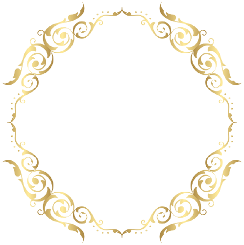
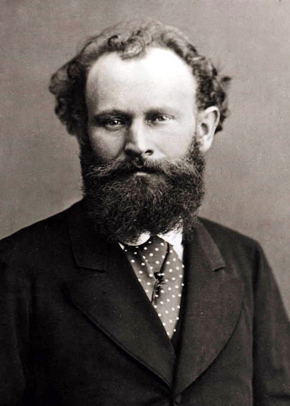

<--Back

Édouard Manet

본명: 에두아르 마네
출생: 1832년 1월 23일
사망: 1883년 4월 30일
에두아르 마네는 할아버지도 판사이고 아버지도 판사인 유복한 집안에서 태어났다.
처음에는 아버지가 화가의 길을 허락해주지 않아 17살에 남아메리카 항로의 견습사원이 되었다.
그 뒤 해군사관학교에 지원했다 낙방한 후 1850년에 겨우 쿠튀르의 아틸리에에 들어갔다. 그러나
학구적인 역사화가인 쿠튀르에게 반발, 자유연구로 나아가 루브르 박물관 등에서 고전회화를 모사,
F.할스나 벨라스케스 등 네덜란드/에스파냐화파의 영향을 많이 받았다. 그 사이 이탈리아 ∙ 독일
∙ 네덜란드 ∙ 벨기에로 여행이 잦았다고 한다.